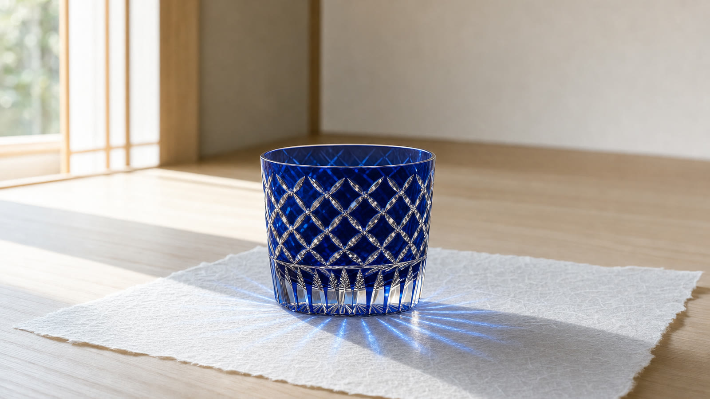
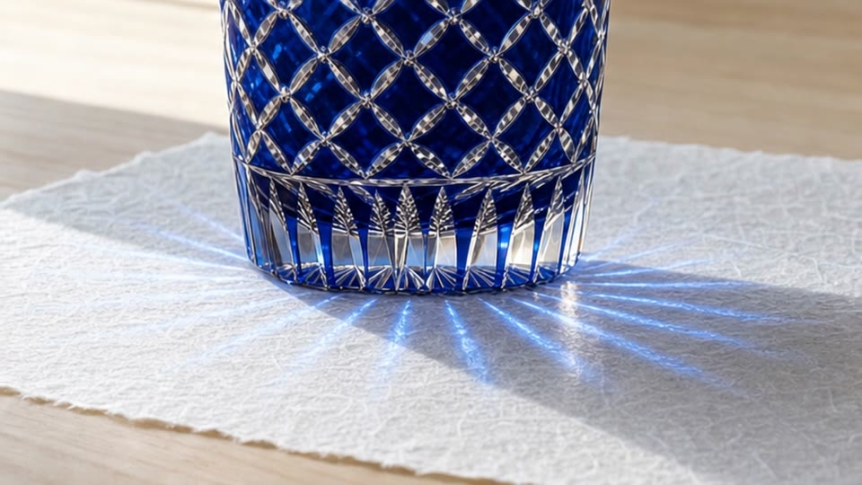
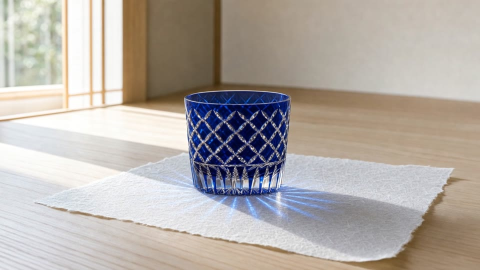

制作の言葉を、知らなくても。
「もっと商品を主役に」。希望を、構図や動きなどの具体的な修正項目へ整理します。
事業者のための AI 映像制作
写真と、伝えたいことから。
企画を選び、試作を見て、言葉で直す。
商品の形と質感を、光で見せる映像に。
現在、提供に向けた検証を進めています。相談は無料です。

01 — MADE WITH STUDIO MARK
自社検証サンプル / 切子グラス光の通り道、カットの陰影、ガラスの奥行き。
商品の説明と短い言葉から、本システムで制作した
切子グラスの映像です。
企画と絵コンテの作成にかかった実測
今回の完成映像の実測
1920 × 1080 / 24fps
自社の検証映像です。商品は架空のものです。各カットの映像は本システムで制作し、並び順を人が編集しました。顧客実績や、すべての商品での品質・制作時間を保証するものではありません。
この映像の商品で、自社ならどう見えるか。写真を添えて相談する ↗
02 — YOUR BRAND, YOUR DIRECTION
一度の生成で、理想の一本になるとは限りません。
だから、試作を見て、良いところを残しながら直せることを大切にしています。


「カット2を、もう少しゆっくり引いて。」
修正依頼の例「もっと商品を主役に」。希望を、構図や動きなどの具体的な修正項目へ整理します。
新しく作ったからといって、黙って置き換えません。採用版を保持し、候補と比較します。
商品の特徴や場面、映像の乱れを検査。最後は完成映像を見て、利用者が判断します。
修正・比較の仕組みは実装済みです。連続する映像再生成を含む通し検証は継続中です。
03 — FROM BRIEF TO FILM
専門的な設定の前に、目的を共有する。
企画と試作を見ながら、完成へ進めます。
商品、届けたい相手、使う場所。写真やロゴなど、使いたい素材を用意します。
どんな順番で何を見せるか。カット構成と表現の方向性を確かめます。
気になるところを言葉で伝え、修正候補を比較。良かった部分は残します。
映像と音を一本で確認。用途に合わせた形式で書き出します。
04 — A FILM FOR YOUR NEXT MOVE
形、素材、仕上げ。
写真だけでは伝えきれないところを、光と動きで見せます。
質感や世界観を伝える、商品紹介映像に。
ECサイトやSNSで、商品に目を留めてもらう接点に。
工芸品や工業製品の、素材と仕上げの精度を見せる映像に。
季節の企画や継続的な発信に。用途に合わせて構成を考えます。
05 — BEFORE WE START
内容を確認し、メールでご連絡します。用途と素材を伺ったうえで、試作の進め方をご提案します。相談は無料で、契約の義務はありません。
商品の写真（正面と斜めなど、数枚あると確かです）と、その特徴、映像を使いたい場所をお知らせください。ロゴなどの掲載素材は、利用できるものをご用意ください。足りない素材や表現の難しさも、最初に整理します。
商品の特徴を保つための参照と検査を行います。ただし、生成映像の完全な再現は保証できません。形状や表示の正確さが重要な場面は、素材や制作方法を個別に検討し、完成映像で確認します。
実在の方が写る映像は、生成ではなく、お預かりした写真や動画を使って構成します。ご本人の同意が取れている素材のみをお使いください。生成で人物をつくることは、実在の方に似せる目的では行いません。
提供プラン・料金は現在調整中です。商品、映像の長さ、表現、修正範囲に応じて必要な制作を整理し、利用条件を確認してから進めます。掲載サンプルの尺は、制作にかかった時間ではありません。
現在は提供に向けた検証段階です。一般提供の時期や利用条件は未確定です。導入をご検討の場合は、まず用途や期待する表現を整理してご相談ください。
横型・縦型・正方形の書き出しに対応する仕組みがあります。画面の比率が変わると構図や文字の見え方も変わるため、使う場所を決めてから制作・確認します。
LET’S MAKE YOUR FIRST FILM
何を見せたいか。誰に届けたいか。
まだ決まっていないことがあっても、
そこから企画の方向性を考えられます。
相談は無料。契約の義務はありません。
返信が届かない場合は、迷惑メールの振り分けをご確認ください。